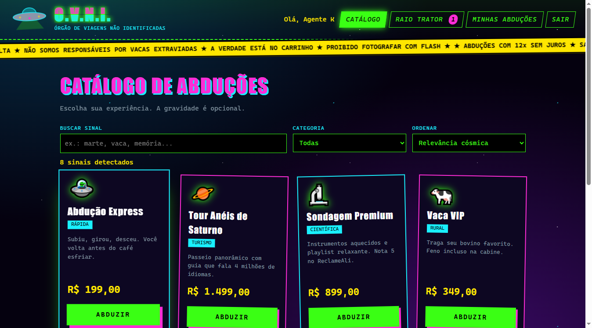

Testes automatizados · 2ª etapa
O.V.N.I. — Órgão de Viagens Não Identificadas
Suíte de testes automatizados com Selenium WebDriver, Python e pytest para uma agência fictícia de turismo por abdução alienígena, criada para este trabalho.
Ferramenta Selenium + Python + pytest
Navegador Chrome headless
Execução 10/11/2026 às 17:06
27
cenários automatizados de 33 levantados
21 / 29
positivos / negativos
4 min 12 s
tempo total da suíte
1 Sistema testadoAplicação web própria (HTML, CSS e JavaScript, sem backend, estado em localStorage), criada para este trabalho. Não é nenhum dos exemplos usados em aula. O site fica em site/ e a suíte sobe um servidor HTTP local sozinha. Login de teste: agente@ovni.gov / area51.
Fluxos identificados na exploração manual:
Fluxo Tela Regras observadas Autenticação #/loginValidação de campos, verificação assíncrona (~0,7 s), bloqueio após 3 senhas erradas, rotas protegidas Catálogo #/catalogo8 pacotes, busca com debounce (0,4 s) ignorando acento/caixa, filtro por categoria, ordenação Carrinho ("raio trator") #/carrinhoQuantidade de 1 a 5, remoção, cupons percentuais, totais, badge no menu Agendamento #/checkoutNome ≥ 3 caracteres, idade 18–120, tipo sanguíneo, data futura DD/MM/AAAA, termo obrigatório; processamento assíncrono (~1,5 s); protocolo ABD-000000 Histórico #/abducoesLista persistida, cancelamento com modal de confirmação
2 Ferramenta e arquiteturaOpção A: Selenium WebDriver + Python + pytest , com Page Objects, fixtures e pytest-html. O driver do Chrome é baixado pelo Selenium Manager.
site/ sistema sob teste (HTML + CSS + JS, estado em localStorage)
tests/
conftest.py setup/teardown: servidor, driver, sessão, evidências
gravador.py gravação opcional da execução em MP4
pages/ Page Objects (um por tela) + base com esperas explícitas
data/checkout_invalidos.json massa dos testes orientados a dados
test_login.py autenticação, bloqueio, rotas protegidas, logout
test_catalogo.py listagem, busca, filtro, ordenação
test_carrinho.py itens, quantidades, cupons, totais
test_checkout.py validações do formulário e agendamento ponta a ponta
test_abducoes.py histórico, cancelamento, persistência
docs/PLANO_DE_TESTES.md planejamento da automação
evidencias/ relatório HTML, JUnit XML, screenshots e vídeos
3 PlanejamentoPrioridade: A bloqueia o uso do sistema ou envolve dinheiro; M regra de negócio relevante; B cosmético ou raro. Os números dos cenários automatizados levam aos testes correspondentes.
# Funcionalidade Objetivo Resultado esperado Prior. Automatizar? Justificativa 01 Login Entrar com credenciais válidas Vai ao catálogo e mostra "Olá, Agente K" A Sim Porta de entrada de todos os fluxos; repetido a cada regressão 02 Login Rejeitar campos vazios / e-mail malformado / credenciais erradas Mensagem específica; permanece no login A Sim Vários dados para a mesma regra: ideal para parametrização 03 Login Bloquear após 3 tentativas erradas Mensagem de bloqueio, botão desabilitado, persiste ao recarregar A Sim Regra de segurança; tedioso e sujeito a erro manualmente 04 Controle de acesso Acessar rota interna sem sessão Redireciona para o login A Sim Falha aqui expõe todo o sistema; barato de automatizar 05 Logout Encerrar sessão Volta ao login, sessão removida, rota interna bloqueada M Sim Complementa 04; estável 06 Catálogo Listar todos os pacotes 8 cards e contador "8 sinais detectados" M Sim Teste de sanidade rápido 07 Catálogo Buscar por nome, descrição, sem acento Só os pacotes correspondentes M Sim Orientado a dados; exige sincronização com o debounce 08 Catálogo Buscar termo inexistente Estado vazio e contador zero M Sim Caminho negativo determinístico 09 Catálogo Filtrar por categoria Só pacotes da categoria M Sim Regra simples e estável 10 Catálogo Ordenar por preço (asc/desc) Lista em ordem numérica M Sim Conferir ordem de 8 preços à mão é propenso a erro 11 Catálogo Combinar busca e filtro sem interseção Estado vazio B Sim Custo marginal baixo reaproveitando o page object 12 Carrinho Adicionar pacotes pelo catálogo Badge incrementa, aviso aparece, itens e total corretos A Sim Caminho crítico de venda 13 Carrinho Aumentar quantidade Subtotal, total e badge recalculados A Sim Cálculo monetário 14 Carrinho Respeitar limites 1–5 Botões − e + desabilitam nos limites M Sim Valor-limite; fácil de esquecer em teste manual 15 Carrinho Remover item Item some, total e badge atualizam M Sim Cálculo monetário 16 Cupom Aplicar cupom válido (10% e 50%, minúsculas) Desconto e total corretos A Sim Dinheiro; parametrizável 17 Cupom Rejeitar cupom inexistente / em branco Mensagem de erro; total inalterado M Sim Negativo determinístico 18 Carrinho Impedir agendamento com carrinho vazio Botão desabilitado; URL direta devolve ao carrinho A Sim Evita pedido sem itens 19 Agendamento Concluir com dados válidos Protocolo ABD-\d{6}, carrinho esvazia, registro "AGENDADA" no histórico A Sim Fluxo ponta a ponta mais importante 20 Agendamento Cobrar total com cupom Total do checkout e da confirmação com desconto A Sim Integração carrinho → checkout 21 Agendamento Aceitar idades-limite 18 e 120 Agendamento concluído M Sim Análise de valor-limite 22 Agendamento Rejeitar cada campo inválido (10 variações) Erro só no campo inválido; nada é gravado A Sim Data-driven (JSON); 10 combinações manuais a cada regressão é inviável 23 Agendamento Enviar formulário em branco Todos os campos acusam erro; carrinho intacto M Sim Complementa 22 24 Histórico Exibir estado vazio Mensagem de histórico vazio B Sim Rápido e estável 25 Histórico Cancelar abdução Status "CANCELADA", sem botão, persiste ao recarregar, demais intactas A Sim Altera estado persistido 26 Histórico Desistir no modal Status permanece "AGENDADA" M Sim Negativo do 25 27 Segurança Nome com HTML no histórico Exibido como texto; script não executa M Sim Regressão de XSS é silenciosa para o olho humano 28 Visual Animações (disco, glitch, letreiro), cores neon Aparência conforme o design B Não Julgamento subjetivo; asserção por pixel seria frágil. Revisão visual manual 29 Responsividade Layout em celular (< 700 px) Filtros e formulário em uma coluna B Não Melhor verificado por exploração manual em dispositivos reais; baixo risco funcional 30 Acessibilidade Navegação por teclado e leitor de tela Foco visível, rótulos lidos M Não (nesta suíte)Exige ferramenta específica (axe) e avaliação humana; fora do escopo de Selenium funcional 31 Aviso (toast) Sumir após 2,5 s Aviso desaparece sozinho B Não Dependente de tempo: teste lento e instável para ganho mínimo 32 Protocolo Unicidade entre agendamentos Protocolos nunca se repetem B Não Geração aleatória: colisão não é reproduzível via UI; caberia teste unitário 33 Compatibilidade Firefox / Edge Mesmo comportamento B Não (por ora)Suíte roda em Chrome; bastaria nova fixture, adiado por custo de tempo de execução
Cenários implementados por módulo
Módulo Funcionalidade Testes Positivos Negativos Tempo tests/test_login.pyAutenticação e acesso 12 2 10 50.5 s tests/test_catalogo.pyCatálogo 10 8 2 37.0 s tests/test_carrinho.pyCarrinho e cupons 9 5 4 31.7 s tests/test_checkout.pyAgendamento (checkout) 15 4 11 71.8 s tests/test_abducoes.pyHistórico de abduções 4 2 2 14.9 s Total 27 cenários 50 21 29 251.6 s
A diferença entre cenários e testes vem da parametrização: cada conjunto de dados cobre uma classe de equivalência ou valor-limite distinto (ex.: idade 17, 121 e não numérica), não repetições arbitrárias.
4 Onde cada conteúdo da disciplina apareceConteúdo Onde Seletores data-testid via CSS (base_page.tid), CSS composto por linha da tabela (carrinho_page._na_linha), XPath relativo do título ao botão do card (catalogo_page.abduzir)Esperas e sincronização Só esperas explícitas (WebDriverWait), nenhum sleep: debounce da busca (CatalogoPage.buscar), login assíncrono (aguardar_erro_contendo), overlay de processamento (CheckoutPage.aguardar_confirmacao), modal (AbducoesPage) Assertions Todo teste verifica o efeito de negócio: valores monetários, regex do protocolo, status, rota, conteúdo do localStorage — não apenas "elemento existe" Positivos e negativos Marcadores positivo (21 testes) e negativo (29 testes) Reutilização Page Objects, BasePage, fixtures sessao e carrinho_com Parametrização / dados @pytest.mark.parametrize em login, busca, ordenação, cupons; checkout negativo lido de JSONSetup e teardown Fixtures com yield: servidor por sessão, navegador limpo por teste Organização Um módulo por funcionalidade, marcadores smoke/positivo/negativo em pytest.ini Relatórios e evidências pytest-html autocontido com screenshot e URL final de cada teste; JUnit XML; PNGs nomeados por teste
5 Resultado da execuçãoExecução de 10/11/2026 às 17:06, a mesma gravada nos vídeos: 50 aprovados, 0 reprovados , 251.6 s em Chrome headless, com um navegador novo por teste para isolar o localStorage. 3 testes marcados como smoke cobrem os fluxos críticos. Relatório original do pytest-html: evidencias/relatorio.html ; JUnit: evidencias/junit.xml .
Autenticação e acesso 12 testes · 12 ok · 50.5 s
Catálogo 10 testes · 10 ok · 37.0 s
Carrinho e cupons 9 testes · 9 ok · 31.7 s
Agendamento (checkout) 15 testes · 15 ok · 71.8 s
Histórico de abduções 4 testes · 4 ok · 14.9 s
6 Casos de teste com vídeoCada teste tem o vídeo da execução (com nome e resultado na legenda), a ação, o resultado esperado e o screenshot final. Nos vídeos há uma pausa de 0,4 s após cada clique ou digitação, só para dar para acompanhar; a execução normal não tem pausa fixa.
Todos os módulos Autenticação e acesso Catálogo Carrinho e cupons Agendamento (checkout) Histórico de abduções Todos os tipos Positivos Negativos Smoke 50 de 50
Autenticação e acesso tests/test_login.py · 12 testes
#39
aprovado
4.54 s
Login com credenciais válidas
Cenário 01 · positivo smoke
Ação Autentica com agente@ovni.gov / area51.
Esperado Rota vai para #/catalogo e a barra mostra “Olá, Agente K”.
tests/test_login.py::test_login_com_credenciais_validas_abre_catalogo
Screenshot final
#40
aprovado
3.47 s
Login inválido é rejeitado
Cenário 02 · negativo
Dado E-mail vazio → “Informe o e-mail do agente.”
Ação Envia o formulário de login com um dado inválido.
Esperado Mensagem de erro específica, permanece em #/login e a barra de usuário não aparece.
tests/test_login.py::test_login_invalido_exibe_mensagem_e_nao_autentica[email_vazio]
Screenshot final
#41
aprovado
3.55 s
Login inválido é rejeitado
Cenário 02 · negativo
Dado agente.ovni.gov → “E-mail em formato inválido.”
Ação Envia o formulário de login com um dado inválido.
Esperado Mensagem de erro específica, permanece em #/login e a barra de usuário não aparece.
tests/test_login.py::test_login_invalido_exibe_mensagem_e_nao_autentica[email_sem_arroba]
Screenshot final
#42
aprovado
3.35 s
Login inválido é rejeitado
Cenário 02 · negativo
Dado Senha vazia → “Informe a senha.”
Ação Envia o formulário de login com um dado inválido.
Esperado Mensagem de erro específica, permanece em #/login e a barra de usuário não aparece.
tests/test_login.py::test_login_invalido_exibe_mensagem_e_nao_autentica[senha_vazia]
Screenshot final
#43
aprovado
4.87 s
Login inválido é rejeitado
Cenário 02 · negativo
Dado Senha area52 → “Credenciais não reconhecidas. Tentativa 1 de 3.”
Ação Envia o formulário de login com um dado inválido.
Esperado Mensagem de erro específica, permanece em #/login e a barra de usuário não aparece.
tests/test_login.py::test_login_invalido_exibe_mensagem_e_nao_autentica[senha_errada]
Screenshot final
#44
aprovado
4.68 s
Login inválido é rejeitado
Cenário 02 · negativo
Dado et@casa.com → “Credenciais não reconhecidas. Tentativa 1 de 3.”
Ação Envia o formulário de login com um dado inválido.
Esperado Mensagem de erro específica, permanece em #/login e a barra de usuário não aparece.
tests/test_login.py::test_login_invalido_exibe_mensagem_e_nao_autentica[usuario_inexistente]
Screenshot final
#45
aprovado
8.69 s
Bloqueio após 3 tentativas
Cenário 03 · negativo
Ação Erra a senha três vezes seguidas e recarrega a página.
Esperado “Acesso bloqueado. Os Homens de Preto foram notificados.”, botão desabilitado, bloqueio persiste após o refresh.
tests/test_login.py::test_tres_tentativas_erradas_bloqueiam_ate_a_senha_correta
Screenshot final
#46
aprovado
3.33 s
Rota protegida sem sessão
Cenário 04 · negativo
Dado Rota #/catalogo
Ação Acessa uma rota interna direto pela URL, sem estar logado.
Esperado Redireciona para #/login com o campo de e-mail visível.
tests/test_login.py::test_rota_protegida_sem_sessao_redireciona_para_login[/catalogo]
Screenshot final
#47
aprovado
3.37 s
Rota protegida sem sessão
Cenário 04 · negativo
Dado Rota #/carrinho
Ação Acessa uma rota interna direto pela URL, sem estar logado.
Esperado Redireciona para #/login com o campo de e-mail visível.
tests/test_login.py::test_rota_protegida_sem_sessao_redireciona_para_login[/carrinho]
Screenshot final
#48
aprovado
3.30 s
Rota protegida sem sessão
Cenário 04 · negativo
Dado Rota #/checkout
Ação Acessa uma rota interna direto pela URL, sem estar logado.
Esperado Redireciona para #/login com o campo de e-mail visível.
tests/test_login.py::test_rota_protegida_sem_sessao_redireciona_para_login[/checkout]
Screenshot final
#49
aprovado
3.13 s
Rota protegida sem sessão
Cenário 04 · negativo
Dado Rota #/abducoes
Ação Acessa uma rota interna direto pela URL, sem estar logado.
Esperado Redireciona para #/login com o campo de e-mail visível.
tests/test_login.py::test_rota_protegida_sem_sessao_redireciona_para_login[/abducoes]
Screenshot final
#50
aprovado
4.17 s
Logout encerra a sessão
Cenário 05 · positivo
Ação Faz login, clica em Sair e tenta voltar para #/catalogo pela URL.
Esperado Cai no login de novo e a chave ovni_sessao some do localStorage.
tests/test_login.py::test_logout_encerra_sessao_e_bloqueia_retorno
Screenshot final
Catálogo tests/test_catalogo.py · 10 testes
#14
aprovado
3.24 s
Catálogo lista todos os pacotes
Cenário 06 · positivo
Ação Abre o catálogo logado.
Esperado 8 cards e o contador “8 sinais detectados”.
tests/test_catalogo.py::test_catalogo_lista_os_oito_pacotes
Screenshot final
#15
aprovado
3.75 s
Busca retorna só os correspondentes
Cenário 07 · positivo
Dado “marte” → Fim de Semana em Marte
Ação Digita um termo na busca (com debounce de 0,4 s).
Esperado Só os pacotes esperados aparecem na lista.
tests/test_catalogo.py::test_busca_retorna_apenas_pacotes_correspondentes[termo_no_nome]
Screenshot final
#16
aprovado
3.88 s
Busca retorna só os correspondentes
Cenário 07 · positivo
Dado “bovino” (só na descrição) → Vaca VIP
Ação Digita um termo na busca (com debounce de 0,4 s).
Esperado Só os pacotes esperados aparecem na lista.
tests/test_catalogo.py::test_busca_retorna_apenas_pacotes_correspondentes[termo_so_na_descricao]
Screenshot final
#17
aprovado
4.18 s
Busca retorna só os correspondentes
Cenário 07 · positivo
Dado “MEMORIA” → Apagão de Memória
Ação Digita um termo na busca (com debounce de 0,4 s).
Esperado Só os pacotes esperados aparecem na lista.
tests/test_catalogo.py::test_busca_retorna_apenas_pacotes_correspondentes[ignora_acento_e_caixa]
Screenshot final
#18
aprovado
3.75 s
Busca retorna só os correspondentes
Cenário 07 · positivo
Dado “pre” → Dissecação Simulada, Sondagem Premium, Abdução Express
Ação Digita um termo na busca (com debounce de 0,4 s).
Esperado Só os pacotes esperados aparecem na lista.
tests/test_catalogo.py::test_busca_retorna_apenas_pacotes_correspondentes[varios_resultados]
Screenshot final
#19
aprovado
3.82 s
Busca sem resultado
Cenário 08 · negativo
Ação Busca “unicórnio”.
Esperado Lista vazia, “Nenhum sinal detectado neste quadrante.” e contador zerado.
tests/test_catalogo.py::test_busca_sem_correspondencia_mostra_estado_vazio
Screenshot final
#20
aprovado
3.32 s
Filtro por categoria
Cenário 09 · positivo
Ação Filtra pela categoria Turismo.
Esperado Só “Fim de Semana em Marte” e “Tour Anéis de Saturno”, todos com selo TURISMO.
tests/test_catalogo.py::test_filtro_por_categoria_exibe_somente_a_categoria
Screenshot final
#21
aprovado
3.54 s
Ordenação por preço
Cenário 10 · positivo
Dado Menor preço → ordem crescente
Ação Escolhe a ordenação por preço.
Esperado Os 8 preços na ordem numérica pedida.
tests/test_catalogo.py::test_ordenacao_por_preco[crescente]
Screenshot final
#22
aprovado
3.64 s
Ordenação por preço
Cenário 10 · positivo
Dado Maior preço → ordem decrescente
Ação Escolhe a ordenação por preço.
Esperado Os 8 preços na ordem numérica pedida.
tests/test_catalogo.py::test_ordenacao_por_preco[decrescente]
Screenshot final
#23
aprovado
3.92 s
Busca + filtro sem interseção
Cenário 11 · negativo
Ação Filtra Rural e busca “marte” (Marte é Turismo).
Esperado Estado vazio.
tests/test_catalogo.py::test_busca_e_filtro_combinados_sem_intersecao
Screenshot final
Carrinho e cupons tests/test_carrinho.py · 9 testes
#05
aprovado
4.34 s
Adicionar pacotes pelo catálogo
Cenário 12 · positivo smoke
Ação Clica em Abduzir em Abdução Express e Vaca VIP e abre o carrinho.
Esperado Badge 0 → 1 → 2, aviso “fisgado pelo raio trator!”, 2 itens e total R$ 548,00.
tests/test_carrinho.py::test_adicionar_pacotes_pelo_catalogo_atualiza_badge_e_carrinho
Screenshot final
#06
aprovado
3.46 s
Aumentar quantidade recalcula valores
Cenário 13 · positivo
Ação Com Express + Vaca no carrinho, aumenta o Express duas vezes.
Esperado Quantidade 3, subtotal R$ 597,00, total R$ 946,00, badge 4.
tests/test_carrinho.py::test_aumentar_quantidade_recalcula_subtotal_e_total
Screenshot final
#07
aprovado
3.57 s
Quantidade limitada de 1 a 5
Cenário 14 · negativo
Ação Verifica o botão − em 1 e aumenta até 5.
Esperado − desabilitado em 1; + desabilitado em 5.
tests/test_carrinho.py::test_quantidade_respeita_limites_de_1_a_5
Screenshot final
#08
aprovado
3.35 s
Remover item
Cenário 15 · positivo
Ação Remove a Abdução Express do carrinho.
Esperado Sobra só a Vaca VIP, total R$ 349,00, badge 1.
tests/test_carrinho.py::test_remover_item_atualiza_lista_e_total
Screenshot final
#09
aprovado
3.51 s
Cupom válido aplica desconto
Cenário 16 · positivo
Dado TERRAPLANA10 → 10% (total R$ 493,20)
Ação Aplica um cupom válido sobre R$ 548,00.
Esperado Mensagem de confirmação, desconto e total corretos.
tests/test_carrinho.py::test_cupom_valido_aplica_desconto_percentual[cupom_10_porcento]
Screenshot final
#10
aprovado
3.32 s
Cupom válido aplica desconto
Cenário 16 · positivo
Dado vaca50 em minúsculas → 50% (total R$ 274,00)
Ação Aplica um cupom válido sobre R$ 548,00.
Esperado Mensagem de confirmação, desconto e total corretos.
tests/test_carrinho.py::test_cupom_valido_aplica_desconto_percentual[cupom_50_porcento_minusculo]
Screenshot final
#11
aprovado
3.43 s
Cupom inválido é rejeitado
Cenário 17 · negativo
Dado ET100 → “Cupom não reconhecido por nenhuma civilização.”
Ação Aplica um cupom inválido.
Esperado Mensagem de erro, desconto zero, total inalterado.
tests/test_carrinho.py::test_cupom_invalido_mostra_erro_e_nao_altera_total[cupom_inexistente]
Screenshot final
#12
aprovado
3.44 s
Cupom inválido é rejeitado
Cenário 17 · negativo
Dado Só espaços → “Digite um cupom.”
Ação Aplica um cupom inválido.
Esperado Mensagem de erro, desconto zero, total inalterado.
tests/test_carrinho.py::test_cupom_invalido_mostra_erro_e_nao_altera_total[cupom_em_branco]
Screenshot final
#13
aprovado
3.24 s
Carrinho vazio bloqueia agendamento
Cenário 18 · negativo
Ação Abre o carrinho vazio e tenta #/checkout pela URL.
Esperado Botão de agendar desabilitado; a URL direta devolve ao carrinho.
tests/test_carrinho.py::test_carrinho_vazio_bloqueia_agendamento
Screenshot final
Agendamento (checkout) tests/test_checkout.py · 15 testes
#24
aprovado
7.02 s
Agendamento válido ponta a ponta
Cenário 19 · positivo smoke
Ação Preenche o formulário com dados válidos (carrinho R$ 897,00) e confirma.
Esperado Protocolo no padrão ABD-000000, carrinho esvazia, registro AGENDADA de R$ 897,00 no histórico.
tests/test_checkout.py::test_agendamento_valido_gera_protocolo_e_registra_no_historico
Screenshot final
#25
aprovado
9.22 s
Cupom do carrinho é cobrado no checkout
Cenário 20 · positivo
Ação Aplica TERRAPLANA10 no carrinho e conclui o agendamento.
Esperado Total de R$ 807,30 no checkout e na confirmação.
tests/test_checkout.py::test_cupom_aplicado_no_carrinho_e_cobrado_no_agendamento
Screenshot final
#26
aprovado
6.05 s
Idades-limite são aceitas
Cenário 21 · positivo
Dado Idade 18
Ação Agenda com a idade no valor-limite.
Esperado Agendamento concluído com protocolo ABD-…
tests/test_checkout.py::test_idades_nos_limites_sao_aceitas[limite_inferior]
Screenshot final
#27
aprovado
6.37 s
Idades-limite são aceitas
Cenário 21 · positivo
Dado Idade 120
Ação Agenda com a idade no valor-limite.
Esperado Agendamento concluído com protocolo ABD-…
tests/test_checkout.py::test_idades_nos_limites_sao_aceitas[limite_superior]
Screenshot final
#28
aprovado
3.81 s
Dado inválido impede agendamento
Cenário 22 · negativo
Dado Campo nome = vazio → “Informe o nome do espécime (mínimo 3 caracteres).”
Ação Preenche o formulário com um único campo inválido (massa em checkout_invalidos.json).
Esperado Erro só nesse campo, continua em #/checkout, nada é gravado no localStorage.
tests/test_checkout.py::test_dado_invalido_impede_agendamento[nome_vazio]
Screenshot final
#29
aprovado
4.15 s
Dado inválido impede agendamento
Cenário 22 · negativo
Dado Campo nome = 'Zé' → “Informe o nome do espécime (mínimo 3 caracteres).”
Ação Preenche o formulário com um único campo inválido (massa em checkout_invalidos.json).
Esperado Erro só nesse campo, continua em #/checkout, nada é gravado no localStorage.
tests/test_checkout.py::test_dado_invalido_impede_agendamento[nome_curto_2_caracteres]
Screenshot final
#30
aprovado
3.96 s
Dado inválido impede agendamento
Cenário 22 · negativo
Dado Campo idade = 17 → “Idade deve estar entre 18 e 120 anos terrestres.”
Ação Preenche o formulário com um único campo inválido (massa em checkout_invalidos.json).
Esperado Erro só nesse campo, continua em #/checkout, nada é gravado no localStorage.
tests/test_checkout.py::test_dado_invalido_impede_agendamento[idade_17_abaixo_do_limite]
Screenshot final
#31
aprovado
4.04 s
Dado inválido impede agendamento
Cenário 22 · negativo
Dado Campo idade = 121 → “Idade deve estar entre 18 e 120 anos terrestres.”
Ação Preenche o formulário com um único campo inválido (massa em checkout_invalidos.json).
Esperado Erro só nesse campo, continua em #/checkout, nada é gravado no localStorage.
tests/test_checkout.py::test_dado_invalido_impede_agendamento[idade_121_acima_do_limite]
Screenshot final
#32
aprovado
3.80 s
Dado inválido impede agendamento
Cenário 22 · negativo
Dado Campo idade = trinta → “Idade deve estar entre 18 e 120 anos terrestres.”
Ação Preenche o formulário com um único campo inválido (massa em checkout_invalidos.json).
Esperado Erro só nesse campo, continua em #/checkout, nada é gravado no localStorage.
tests/test_checkout.py::test_dado_invalido_impede_agendamento[idade_nao_numerica]
Screenshot final
#33
aprovado
3.74 s
Dado inválido impede agendamento
Cenário 22 · negativo
Dado Campo sangue = não selecionado → “Selecione o tipo sanguíneo.”
Ação Preenche o formulário com um único campo inválido (massa em checkout_invalidos.json).
Esperado Erro só nesse campo, continua em #/checkout, nada é gravado no localStorage.
tests/test_checkout.py::test_dado_invalido_impede_agendamento[tipo_sanguineo_nao_selecionado]
Screenshot final
#34
aprovado
3.81 s
Dado inválido impede agendamento
Cenário 22 · negativo
Dado Campo data = 01/01/2020 → “A data deve ser no futuro. Viagem no tempo é outro departamento.”
Ação Preenche o formulário com um único campo inválido (massa em checkout_invalidos.json).
Esperado Erro só nesse campo, continua em #/checkout, nada é gravado no localStorage.
tests/test_checkout.py::test_dado_invalido_impede_agendamento[data_no_passado]
Screenshot final
#35
aprovado
3.96 s
Dado inválido impede agendamento
Cenário 22 · negativo
Dado Campo data = 31/02/2099 → “Data inválida. Use o formato DD/MM/AAAA.”
Ação Preenche o formulário com um único campo inválido (massa em checkout_invalidos.json).
Esperado Erro só nesse campo, continua em #/checkout, nada é gravado no localStorage.
tests/test_checkout.py::test_dado_invalido_impede_agendamento[data_inexistente_31_02]
Screenshot final
#36
aprovado
4.42 s
Dado inválido impede agendamento
Cenário 22 · negativo
Dado Campo data = 2099-05-10 → “Data inválida. Use o formato DD/MM/AAAA.”
Ação Preenche o formulário com um único campo inválido (massa em checkout_invalidos.json).
Esperado Erro só nesse campo, continua em #/checkout, nada é gravado no localStorage.
tests/test_checkout.py::test_dado_invalido_impede_agendamento[data_formato_errado]
Screenshot final
#37
aprovado
3.95 s
Dado inválido impede agendamento
Cenário 22 · negativo
Dado Campo termo = desmarcado → “É obrigatório aceitar o termo de sondagem.”
Ação Preenche o formulário com um único campo inválido (massa em checkout_invalidos.json).
Esperado Erro só nesse campo, continua em #/checkout, nada é gravado no localStorage.
tests/test_checkout.py::test_dado_invalido_impede_agendamento[termo_nao_aceito]
Screenshot final
#38
aprovado
3.46 s
Formulário em branco
Cenário 23 · negativo
Ação Confirma sem preencher nada.
Esperado Os 5 campos acusam erro e o carrinho continua com 3 itens.
tests/test_checkout.py::test_formulario_em_branco_acusa_todos_os_campos
Screenshot final
Histórico de abduções tests/test_abducoes.py · 4 testes
#01
aprovado
3.50 s
Histórico vazio
Cenário 24 · positivo
Ação Abre o histórico sem nenhuma abdução.
Esperado “Você ainda não foi abduzido. Que vida pacata.”
tests/test_abducoes.py::test_historico_vazio_exibe_mensagem
Screenshot final
#02
aprovado
4.62 s
Cancelar abdução
Cenário 25 · positivo
Ação Cancela ABD-000042 pelo modal e recarrega a página.
Esperado Status CANCELADA (persiste após refresh), sem botão de cancelar, ABD-001947 intacta.
tests/test_abducoes.py::test_cancelar_abducao_muda_status_e_persiste_apos_recarregar
Screenshot final
#03
aprovado
3.45 s
Desistir no modal
Cenário 26 · negativo
Ação Abre o modal de cancelamento e desiste.
Esperado Status continua AGENDADA e o botão de cancelar continua disponível.
tests/test_abducoes.py::test_desistir_no_modal_mantem_abducao_agendada
Screenshot final
#04
aprovado
3.31 s
Nome com HTML não vira marcação (XSS)
Cenário 27 · negativo
Ação Grava no histórico um nome <img src=x onerror=…>.
Esperado O nome aparece como texto literal e o script não executa.
tests/test_abducoes.py::test_nome_com_html_e_exibido_como_texto
Screenshot final
7 Investigação de falha
Na primeira execução completa o resultado foi 49 aprovados, 1 reprovado :
FAILED tests/test_carrinho.py::test_adicionar_pacotes_pelo_catalogo_atualiza_badge_e_carrinho
ElementClickInterceptedException: element click intercepted: Element <button ... data-testid="btn-abduzir" data-id="4">
is not clickable at point (1071, 722). Other element would receive the click: <div id="toast" class="toast" ...>
Sintoma O segundo clique em “Abduzir” foi recebido por outro elemento.
Evidência O screenshot abaixo mostra o aviso verde do primeiro item sobre o botão do card “Vaca VIP”.
Causa Defeito do site , não do teste: o aviso fica 2,5 s sobre o canto inferior direito e bloqueia cliques nos cards atrás dele. Um usuário real rápido teria o mesmo problema.
Correção pointer-events: none no .toast (site/style.css). Contornar no teste (esperar o aviso sumir ou clicar via JavaScript) esconderia o defeito.Reteste 50 aprovados, 0 reprovados (ver teste #05 ).

Screenshot capturado automaticamente no momento da falha.
8 Vídeo da suíte completaOs 50 testes em sequência, num único arquivo.
9 Como executarRequisitos: Python 3.10+ e Google Chrome.
python -m venv .venv
.venv\Scripts\activate # Linux/macOS: source .venv/bin/activate
pip install -r requirements.txt
pytest # suíte completa, headless
pytest -m smoke # só os fluxos críticos
pytest -m negativo # só testes negativos
$env:HEADED=1; pytest -m smoke # navegador visível (PowerShell)
$env:VIDEO=1; pytest # grava os vídeos em evidencias/video/
Abra este arquivo a partir da raiz do projeto: vídeos e screenshots são lidos das pastas evidencias/ ao lado.